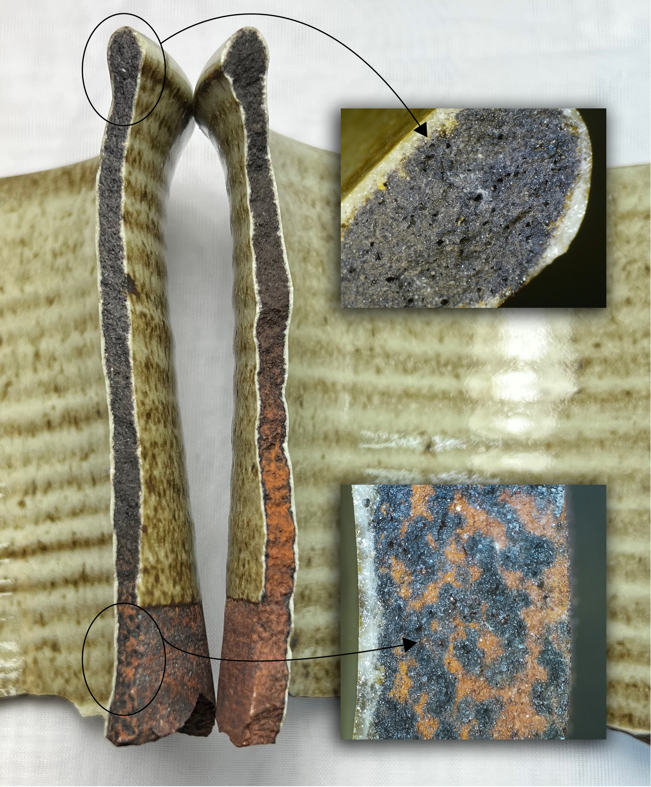
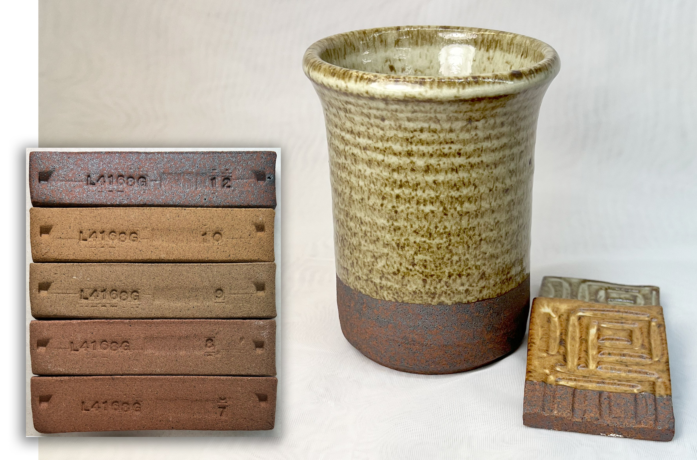
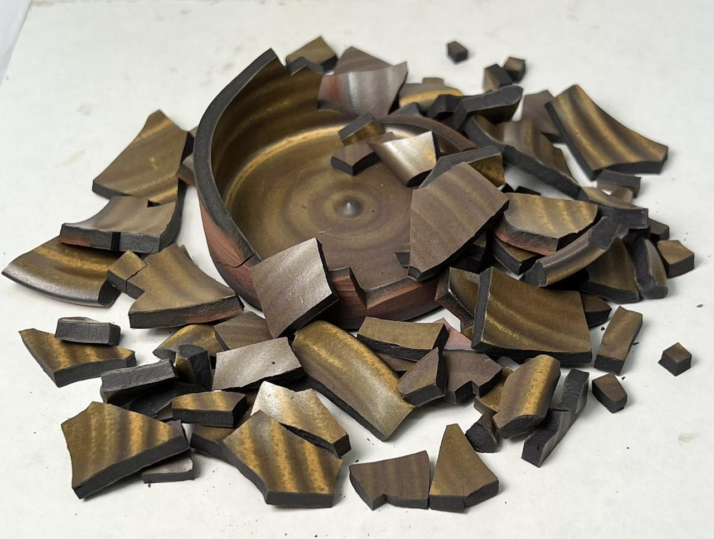
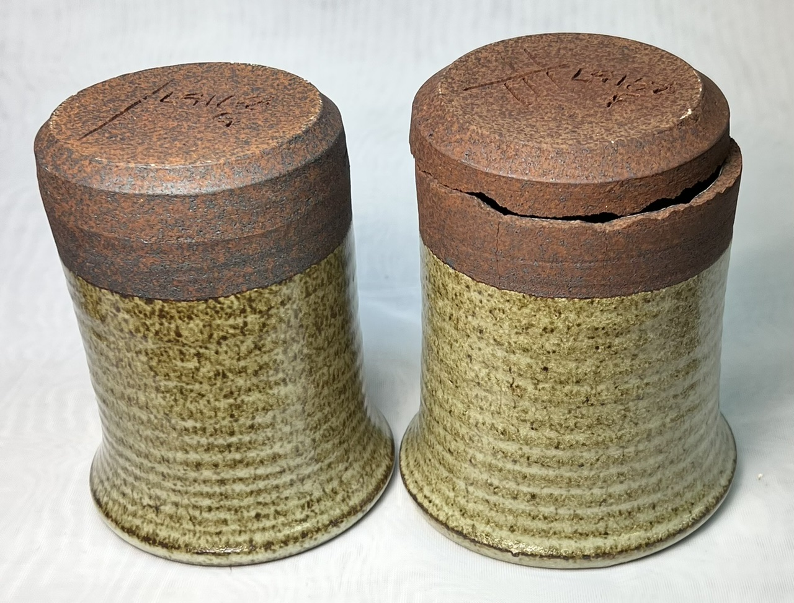
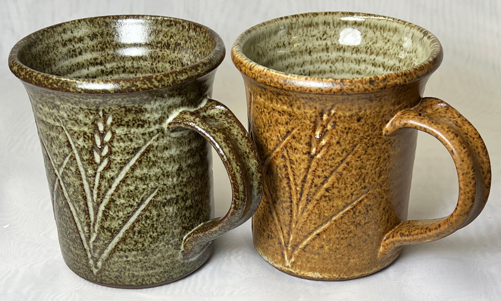
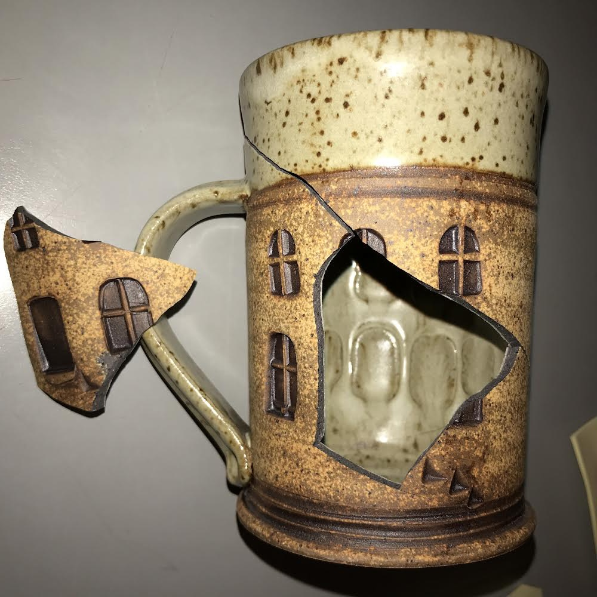
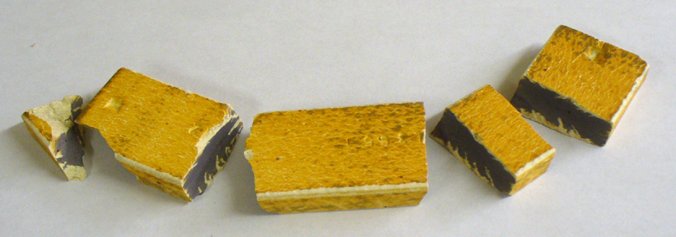

Black Coring
A common fault in reduction gas fired ceramic ware made from iron bearing clays. The interior cross section of the clay turns black.
Details
For potters, who use periodic kilns and slow firing schedules, black coring almost always occurs in reduction firings with iron-containing bodies. But it can also occur in densely packed oxidation-fired kilns (see below). In industry, it occurs in oxidation firings (mainly in tile because production requirements demand fast firing).
There are two schools of thought about the cause in pottery. One blames a combination of fast firing, heavy reduction and trapped carbon. The view is that body carbon fails to oxidize to CO2 and steals oxygen from Fe2O3 (reducing it to FeO, a powerful flux). This FeO then fluxes the body, sealing it and preventing the escape of remaining carbon thus producing the characteristic 'black core' in ware cross-section.
However, black coring happens in bodies that have no carbon: Ones high in iron that have already been bisque fired. The higher the iron and the larger its particle size the more the black coring. Ware cross sections totally enclosed in glaze exhibit the most black coring. Thus, the characteristic black color is likely the reduced black iron, not carbon. This occurs even when kiln reduction is not heavy.
There will always be some degree of blackness (or gray) in the cross-section of reduction-fired ware that contains materials having any amount of iron oxide and carbon (including ball clays). Electric kilns can also produce this phenomenon (in the case of clays of high carbon and iron content, dense kiln pack and little airflow). Once iron is reduced to FeO it is very difficult to reoxidize it back to Fe2O3.
In the tile industry, where ware has not been bisque fired, the problem is organics in the body using up any available oxygen and thus preventing the oxidation of iron compounds. The high density of the ceramic coupled with fast firing make it amazing that it is even possible to fire tile without this issue. Black coring is not considered a functional issue (e.g. strength) as much as an aesthetic one. For heavier ceramics, one source suggested the addition of ammonium nitrate, stating that it promotes the oxidation of organic substances in the preheating phase.
Related Information
Close up of black coring: Is it carbon? Nope. Is it always bad? Nope.

This picture has its own page with more detail, click here to see it.
This is a closeup of a shard from the wall of a thrown vessel. The clay is an iron stoneware, Plainsman Fire-Red with added feldspar, fired in reduction at cone 10. The reduction was not heavy, the kiln was fired with enough air to burn almost all the gas leaving only a slight yellow (but mostly blue) flame at the damper. Is this black color carbon? Consider the following. Carbon is refractory, this is glassy. During bisquit firing the carbon was burned out of this. These black zones have a hole at their centers. This is black iron, a strong flux. The iron is coming from large particles (20-40 mesh) of iron pyrite. In the reduction atmosphere, the natural Fe2O3 is being robbed of oxygen (from both the decomposition of neighboring particles and the atmosphere of the kiln) and converting to FeO. That is melting and interacting with the feldspar to soak into the surrounding matrix. Contrary to what most people think this does not weaken the clay, it strengthens ware (provided the feldspar is present). Once the black has permeated the entire matrix of a piece it becomes very strong (even with a hammer it was unexpectedly difficult to break ware to get these shards). Note the right side is not glaze-covered, if it had been the entire matrix would be black. But still strong.
Black coring with L4168G and L4168F

This picture has its own page with more detail, click here to see it.
These are iron reduction test bodies. The L4168G (left) is far stronger yet it has a higher percentage of Fe2O3 and much more black coring. How is that possible? Because it has 10% added feldspar. The black FeO iron is staining the feldspar black (bleeding out from each pyrite particle), helping it do its job of producing a glassy black color is not coming from the kiln atmosphere? Because the buff-burning bodies in the same kiln did not have any of this. On the right, the iron is restricted by its ability to vitrify the body by limited glass development, ending up destabilizing it instead (by increasing body thermal expansion).
Iron red reduction clay suitable for functional ware? How?

This picture has its own page with more detail, click here to see it.
This is a high iron two-material stoneware fired in reduction, purely a test body we are working on. Normally such bodies are rendered unsuitable because of black coring associated with FeO. But 10% added Custer Feldspar solves that problem, combining with the iron to vitrify the body to excellent fired strength (it does have 5% porosity but this is mainly due to the cavities formerly occupied by the iron pyrite particles. The color and iron speckle are contributed by both of the raw materials in the body. Saint Rose Red supplies most of the iron to produce the red coloration. A1 bentonitic clay adds plasticity and contributes the pyritic iron particles. The fired bars of this body show it at cone 10 reduction (top) and cone 10 oxidation down to 7 (downward from top). Adding just a little more feldspar produces a metallic firing surface! The glaze is GR10-CW, pure Ravenscrag Slip with 10% talc opacified with a little Zircopax and tin oxide.
C-Red clay glazed and black coring at cone 10R

This picture has its own page with more detail, click here to see it.
C-Red clay (also called Carbondale Red) has 12% iron oxide. It is also refractory so easily handles cone 10R. However with that amount of iron is it pretty well impossible to prevent black carbon coring in glazed ware. This cup simply fell to pieces when just touched. Each of these small pieces can be broken into many more with just light finger pressure. Yet the unglazed test bars were unbreakable by hand! The glaze-body bond is also strong. What is demonstrated here is the extreme compression under which the glaze is attached to the clay, breakage relieves it. That means the black coring is increasing the thermal expansion of the body, as the piece cools in the kiln the body is contracting thermally more than the glaze, putting the latter under more and more compression.
Feldspar saves this iron red, black coring reduction body

This picture has its own page with more detail, click here to see it.
These two pieces were in the same firing, the right one exited broken and cracked like this. They contain the same percentage of iron (it is supplied by red fireclay). The glaze is the same. The walls on both of these are completely black-cored. Multiple other pieces of this same size and shape were made of each of these two clays and the result was the same on all of them. The difference: The body on the left has 10% added feldspar. That feldspar is combining with the iron oxide, reduced to black FeO, to vitrify the body - that left mug is incredibly strong. The one on the right is fragile, a light tap with a hammer and it exploded into a dozen pieces. Why? The FeO, for lack of a vitrified matrix, has increased the thermal expansion of the body to the point pieces are failing spontaneously from glaze compression.
Here is something potters can do that industry cannot do!

This picture has its own page with more detail, click here to see it.
These mugs were fired at cone 10R. The body is L4168G5, I mixed it myself using 50% Plainsman Saint Rose Red, 40% Plainsman A2, 10% Custer feldspar. The Saint Rose clay contributes the color, the A2 the speckle and plasticity and the feldspar matures the body enough to avoid black coring. The heavy iron specking is being sourced by these very unique clays, both were ground at 42 mesh only. The left glaze is GR10-CW Ravenscrag Talc matte with added Zircopax. The right one has that same glaze on the inside and G2571A bamboo matte on the outside. The unglazed body is a beautiful deep red. These are certainly not porcelain strength but the glazes fit, the mugs are durable enough and serviceable for normal use. This type of ware is the domain of potters only, no industry would be able to babysit the touchy process it takes to make these, they would not be able to find a reliable material supply, they would not be able to maintain enough consistency and would not be able to justify to customers the high body porosity required.
Glazing ware only on the inside - the hazard

This picture has its own page with more detail, click here to see it.
This is an example of one of John Prosser's "house mugs". They have been fracturing. Partially broken ones are spring-loaded like this. All broken pieces have black coring. Of course when thick-walled, high carbon, high iron bodies are fired without a previous bisque in heavy reduction one can expect true black coring (where Fe2O3 and CO2 react to form a body matrix hostile to even slight thermal shock). But none of these factors are present. Of course, testing could be done to bisque these higher, soak longer in the bisque, start reduction later, and oxidize longer at the end. But these measures will not likely be enough. The outer surface could be put on as an engobe over a vitreous body (but lots of work using the EBCT test would be needed because of the difference in firing shrinkage).
Stepping back consider: These black cored sections are unglazed. When iron reduces it turns black so the color black alone does not mean official black coring. When there is enough feldspar to form a good measure of vitrification (as is the case with this body) one can expect it to be suitable for light duty functional ware. Magnesia mattes like this have low thermal expansion because they contain a lot of MgO, a super low expansion flux. That puts them under compression on the body, a lot of unglazed external surface like this compounds the problem. The solution is to raise glaze expansion, something fairly easy to do in high fire. Just increase the KNaO at the expense of CaO.
Carbon burnout in a ball clay

This picture has its own page with more detail, click here to see it.
A broken test bar of ball clay fired to cone 10 reduction. Notice the black carbon core. Ball clays commonly contain carbon, many have a noticeable grey color in the raw state because of this. Notice it has not burned out despite the fact that the clay itself is still fairly porous, the firing was slow and the temperature reached was high. Ball clay typically does not comprise more than 30% of a body recipe so its opportunity to burn away is sufficient. However some specialized bodies have a much higher percentage.
Links
| Glossary |
Black Core
A common fault in reduction gas fired ceramic ware made from iron bearing clays. The interior cross section of the clay turns black. |
| Articles |
Organic Matter in Clays: Detailed Overview
A detailed look at what materials contain organics, what its effects are in firing (e.g. black core), what to do to deal with the problem and how to measure the amount of organics in a clay material. |
| Temperatures | Organic burnout (300-) |
 PayPal | No tracking, No ads, No paywall, No transient content! Just organized, concise information constantly updated and improved. Was this helpful? Consider supporting me. |
| By Tony Hansen Follow me on        |  |
Got a Question?
Buy me a coffee and we can talk 

https://digitalfire.com, All Rights Reserved
Privacy Policy